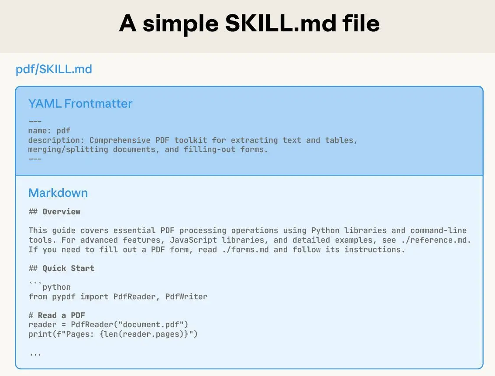

Drehbuch für die Kursleitung
Skills
Teil IV · Agentisch arbeiten · Dauer gesamt: ca. 40 Min. · Braucht: CLAUDE.md, Kontextfenster · Führt zu: MCP & Co.
Material: Aufbau SKILL.md [CC] 12, [OC] 27, „grill me“ [CC] 26
Abschnitte:
- 4.6 Was sind Skills? · ca. 10 Min.
- 4.7 Skill-Beispiel: grill-with-docs · ca. 15 Min.
- 6.2 Eigene Skills · ca. 15 Min.
4.6 Was sind Skills?
Dauer: ca. 10 Min.
Worum geht's
Ein Skill ist eine gespeicherte Anleitung für wiederkehrende Aufgaben: ein Ordner mit einer Datei SKILL.md. Claude kennt immer nur Name und Beschreibung und liest den Rest erst, wenn er gebraucht wird. Die CLAUDE.md dagegen ist immer geladen.
Lernziel
Nach diesem Thema können die Teilnehmenden …
- erklären, was ein Skill ist und woraus eine
SKILL.mdbesteht, - Skill und
CLAUDE.mdunterscheiden, - einen Skill per
/nameaufrufen, - begründen, warum man fremde Skills nur aus vertrauenswürdiger Quelle installiert.
So erklären wir es
Problem: Wir erklären Claude jedes Mal dasselbe („fass das Paper so zusammen: Fragestellung, Methode, …“). Das nervt und wird jedes Mal anders.
Bild: Rezeptkarte. Ein Rezept steht auf einer Karte im Kasten. Du holst sie raus, wenn du das Gericht kochst, nicht jeden Morgen.
Die
CLAUDE.mdist der Zettel am Kühlschrank: hängt immer da. Ein Skill ist die Rezeptkarte im Kasten: Claude weiß, dass sie existiert, und holt sie nur, wenn sie passt.Aufbau: Oben Kopf mit
nameunddescription, darunter die Anleitung in Markdown.
Unser Beispiel (aus dem Handout):
--- name: paper-zusammenfassen description: Fasst ein wissenschaftliches Paper nach festem Schema zusammen. Verwenden, wenn jemand ein Paper oder eine Studie zusammengefasst haben will. --- 1. Lies das Paper ganz. 2. Schreib: Fragestellung, Methode, Ergebnis, Grenzen, offene Fragen. 3. Nenne zu jeder Aussage die Seite.Warum nur der Kopf immer geladen wird: Kontext ist knapp (3.6). Hundert Anleitungen im Kontext wären Ballast. Die Beschreibung ist der Auslöser: Sie entscheidet, wann Claude den Skill zieht. Deshalb gehört neben „Was?“ auch „Verwenden, wenn …“ hinein, mit Wörtern, die du wirklich tippst („Fasst … zusammen“, nicht „Hilfsskill 1“; [KB] 06, §Writing the description). Der
namebesteht aus Kleinbuchstaben, Ziffern und Bindestrichen und muss dem Ordnernamen entsprechen.Aufrufen: Entweder Claude erkennt, dass er passt, oder wir tippen
/paper-zusammenfassen. Mit/skillssiehst du, welche Skills Claude kennt. Manche Skills sind so gebaut, dass sie nur per/namestarten, z. B.grill-with-docsin 4.7.Skills erstellen lassen: „Erstelle mir einen Skill, der …“. Mehr dazu in 6.2.
Vertrauen. Ein fremder Skill ist ein Text, dem dein Agent folgt, mit deinen Rechten.
Fremde Skills sind wie fremde Rezepte, die dein Koch ohne Rückfrage befolgt. Installiere nur welche aus Quellen, denen du vertraust, und wirf einen Blick in die
SKILL.md.Tipp aus dem Material: Für immer gleiche, feste Aufgaben (z. B. Dateien umbenennen) lieber ein Skript schreiben lassen als die KI jedes Mal arbeiten lassen ([CC] 24).
Zeigen (Live-Demo)
Einen kleinen Skill live erstellen lassen und aufrufen.
Erstelle mir einen Skill „konzept-erklaeren“. Er erklärt ein Konzept in drei Stufen: ein Satz für Kinder, ein Absatz für Abiturient:innen, ein Absatz mit Formeln für Studierende. Nenne am Ende ein Alltagsbeispiel.
Dann Ordner und SKILL.md im Explorer von VS Code zeigen (Kopf und Anleitung markieren), danach:
/konzept-erklaeren Zinseszins
Worauf wir hinweisen: Kopf = immer bekannt, Rest = nur bei Bedarf. Wo der Skill liegt, schlägt Claude vor: im Projekt (.claude/skills/<name>/SKILL.md) oder persönlich (~/.claude/skills/<name>/SKILL.md). Änderungen an einem Skill gelten sofort, ohne Neustart. Nur wenn der Ordner skills/ ganz neu ist, hilft /reload-skills ([KB] 06, §Live reload; Stand 2026-11).
Selbst machen (Übung)
Reflexion statt Übung (Selbermachen folgt in 6.2): Welche Aufgabe erklärst du Claude immer wieder? Schreib in zwei Sätzen auf, was ein Skill dafür enthalten würde. In Paaren vorlesen. Wer will, lässt Claude daraus gleich einen Skill erstellen.
Stolpersteine & Fragen
- Skill vs.
CLAUDE.md?CLAUDE.md: Regeln, die immer gelten (Ton, Ordnerstruktur). Skill: Anleitung für eine bestimmte Aufgabe. - Claude nutzt den Skill nicht. Beschreibung zu vage (fehlt „Verwenden, wenn …“?), oder Skill ist auf manuellen Aufruf eingestellt. Dann
/nametippen. - Ist das sicher? Nur mit vertrauenswürdigen Quellen. Beim Installieren fremder Skills immer vorher reinschauen.
- Wo liegen Skills? Der Ordnername entspricht dem Namen (Kleinbuchstaben, Bindestriche), darin
SKILL.md. Orte siehe oben ([KB] 06, Stand 2026-11).
Material & Quellen
- Handout: Schüler-Seite, Abschnitt „Skills“
- Kollegen-Folien: [CC] Folie 12 / [OC] 27 (Aufbau SKILL.md), [CC] 24 (Best Practices), siehe material.md
- Wissensbasis: [KB] 06
- Offizielle Doku: Skills in Claude Code (code.claude.com/docs)
Stand: 2026-11-12
4.7 Skill-Beispiel: grill-with-docs
Dauer: ca. 15 Min.
Worum geht's
Statt dir selbst eine Spezifikation auszudenken, lässt du dich vom Agenten ausfragen, bis ihr dasselbe meint. grill-with-docs stellt Fragen in Runden, jede mit einer empfohlenen Antwort, liest nach, was in den Dateien steht, und schreibt nebenbei ein Glossar.
Lernziel
Nach diesem Thema können die Teilnehmenden …
- den Skill installieren und mit
/grill-with-docsstarten, - eine Fragerunde mit „ja“ (Empfehlung übernehmen) oder eigener Antwort beantworten,
- erklären, was
GLOSSARY.mdunddocs/adr/sind, - einschätzen, wann sie
grill-with-docsund wanngrill-mebrauchen.
So erklären wir es
Problem: Beim Schreiben der Spezifikation (4.1) wissen wir oft nicht, was wir nicht wissen. Wir vergessen Punkte, oder wir und Claude meinen mit demselben Wort etwas anderes.
Bild: das Aufnahmegespräch. Eine Bergführerin fragt vor der Tour: Kondition? Erfahrung? Wetterfenster? Sie plant erst danach. Hier macht das der Agent.
Normal fragst du Claude. Hier dreht sich das um: Claude fragt dich aus, und zwar „gnadenlos“, wie es im Skill heißt, bis nichts mehr ungeklärt ist.
So läuft eine Runde. Der Agent baut einen „Entscheidungsbaum“: Jede Entscheidung führt zu weiteren. Er fragt alles, was jetzt schon geklärt werden kann, in einer Runde, nummeriert, jeweils mit seiner empfohlenen Antwort. Die Fragen sind so formuliert, dass „ja“ die Empfehlung übernimmt. Dann wartet er auf deine Antworten, die neue Fragen freischalten. Das wiederholt sich, bis alles geklärt ist.
❓ Q1 - Reisezeit: Soll der Törn im Juni oder im September stattfinden? ➡️ September: weniger Wind-Extreme, Meer noch warm.Fakten sucht der Agent selbst. Was in deinen Dateien steht, schaut er nach (dafür startet er einen Hilfs-Agenten, der in Ruhe sucht). Dich fragt er nur nach Entscheidungen, nicht nach Dingen, die er nachlesen kann.
Das Glossar. Sobald ein Begriff geklärt ist, schreibt er ihn in
GLOSSARY.md: Was meinen wir mit „Etappe“? Mit „Crew“? Das ist reines Vokabular.Ein Glossar ist wie die gemeinsame Speisekarte: Alle wissen, was „Törn“ in diesem Projekt bedeutet.
Entscheidungsnotizen (ADR). Schwer umkehrbare, überraschende Entscheidungen mit echtem Abwägen schreibt er als kurze Notiz in
docs/adr/. ADR heißt Architecture Decision Record, für uns: „Entscheidungstagebuch“. Dafür müssen alle drei Bedingungen zutreffen, deshalb entstehen oft gar keine.Was nicht herauskommt: Eine fertige Spezifikation. Das meiste, was wir beantworten, steht nur im Gespräch. Danach: Plan schreiben lassen (4.2), im selben Gespräch.
grill-me: Ohne Projektordner (nur ein Chat-Gespräch) gibt es die Variante/grill-me: dieselbe Fragerunde, aber ohne Dateien. Vor dem Workshop prüfen, obgrill-meim Plugin enthalten ist.Vertrauen: Wir installieren hier fremde Anweisungen (4.6). Das Repo ist MIT-lizenziert und öffentlich einsehbar: github.com/mattpocock/skills. Kurz in die Dateien schauen ist erlaubt und erwünscht.
Zeigen (Live-Demo)
Installieren (außerhalb von Claude Code im Terminal; Stand der Anleitung im README: 2026-11-06):
claude plugin install mattpocock-skills@claude-plugins-official
Der Skill besteht aus drei Teilen (grill-with-docs verweist auf grilling und domain-modeling). Mit dem Plugin kommen sie zusammen. Dann im Segeltörn-Projektordner claude starten und:
/grill-with-docs Ich will einen Planer für eine Segelwoche in Kroatien.
Dabei zeigen: (1) die erste Runde mit Nummern und Empfehlungen, (2) eine Antwort „ja“, eine eigene Antwort, (3) wie der Agent Fakten aus quellen/ selbst nachliest, (4) GLOSSARY.md im Editor, wie sie während des Gesprächs wächst. Nach der letzten Runde: „Schreib daraus eine Spezifikation und einen Plan in plan.md“ und weiter wie in 4.3.
Der Skill startet nur, wenn wir /grill-with-docs tippen, Claude wählt ihn nicht von allein.
Selbst machen (Übung)
Jede:r installiert das Plugin (falls nicht schon durch uns geschehen) und startet im eigenen Projekt:
/grill-with-docs Ich will [eigene Idee: Lernplan / Bergtour / Budget / …].
Mindestens zwei Runden beantworten. Zwischendurch „ja“ sagen, wo die Empfehlung passt, und mindestens einmal widersprechen.
Geklappt, wenn: Es gibt eine GLOSSARY.md mit mindestens drei Begriffen, und du kannst dein Vorhaben in drei Sätzen erklären, die vorher nicht klar waren. Wer fertig ist, lässt sich einen Plan schreiben.
Stolpersteine & Fragen
- Installation klappt nicht.
claude plugin installim normalen Terminal, nicht in der Claude-Code-Eingabe. Alternativ in Claude Code/plugin. Name der Quelle (claude-plugins-official) vor dem Workshop prüfen, Plugin-Namen können sich ändern. - Alle Fragen auf einmal, ohne Empfehlungen, kein Glossar. Der Skill besteht aus mehreren Dateien und der Agent hat nicht alle geladen. Fragen: „Welche Skills hast du geladen?“ Notfalls neu starten.
- Keine
GLOSSARY.mdentstanden. Entweder gab es keinen neuen Begriff, oder die Datei-Teilfunktion hat nicht geklappt. Im Projektordner nachsehen, ob Claude dort arbeitet. - Keine ADRs. Normal. Sie entstehen nur bei seltenen Entscheidungen.
- „Ich weiß keine Antwort.“ Dann „weiß ich nicht, schlag etwas vor“ sagen. Ihr klärt das gemeinsam.
- Nicht alle sind überzeugt, dass das Glossar dem Agenten hilft. Der Hauptnutzen liegt bei den Menschen, die dieselben Wörter benutzen. Bei uns kein Streitpunkt, aber ehrlich sagen.
- Zu viele Runden. Wir können jederzeit sagen: „Das reicht, schreib jetzt die Spezifikation.“
Material & Quellen
- Handout: Schüler-Seite, Abschnitt „Beispiel: grill-with-docs“
- Kollegen-Folien: [CC] Folie 26 – Vorläufer „grill me“, siehe material.md
- Repo: mattpocock/skills (MIT). Dateien:
skills/engineering/grill-with-docs/SKILL.md,skills/productivity/grilling/SKILL.md,docs/engineering/grill-with-docs.md
Stand: 2026-11-06
6.2 Eigene Skills
Dauer: ca. 15 Min.
Worum geht's
Alles, was du mehr als zweimal erklärst, gehört in einen Skill. Ein eigener Skill ist ein Rezept, das du einmal schreibst und immer wieder abrufst. Den Skill schreibt Claude, du sagst, was drin stehen soll, und prüfst das Ergebnis.
Lernziel
Nach diesem Thema können die Teilnehmenden …
- eine wiederkehrende Aufgabe aus ihrem Alltag benennen
- Claude daraus einen Skill (
SKILL.md) erstellen lassen - den Skill an einem echten Dokument ausprobieren und nachschärfen
So erklären wir es
- Wiederholung (30 Sek.) zu 4.6: Skill = Ordner mit einer
SKILL.md. Oben Name und Beschreibung, darunter die Anleitung in Markdown. Grafik ist von Anthropic und auf Englisch. Wir zeigen nur: oben der Steckbrief, unten das Rezept. - Bild: Rezeptkarte. Wer jeden Sonntag denselben Kuchen backt, schreibt das Rezept auf. Ein Skill ist die Rezeptkarte für Claude.
- Welche Aufgabe wiederholst du? Wir sammeln mit der Gruppe, abwechselnd aus allen Bereichen:
- Vorlesung nachbereiten → Zusammenfassung + Glossar + 3 Übungsfragen
- Prüfungsvorbereitung → Lernplan aus allen Quellen
- Tourenplanung → Checkliste, Höhenprofil, Wetter-Check
- Törn-Briefing → Crew-Checkliste, Wachplan, Hafenüberblick
- Paper lesen → feste Struktur (Fragestellung, Methode, Ergebnis, Grenzen)
- Rechnung prüfen → Einheiten, Formeln, Plausibilität (Mathe/Physik)
- Die Faustregel: Wenn du Claude zum dritten Mal dasselbe erklärst, ist es ein Skill. Sonst reicht ein Prompt oder die
CLAUDE.md(Unterschied:CLAUDE.mdgilt immer, ein Skill nur, wenn er gebraucht wird). - Gute Skills sind klein. Eine Aufgabe, feste Schritte, festes Ausgabeformat, ein Satz „Verwenden, wenn …“ in der Beschreibung. Die Beschreibung ist der Auslöser: Sie entscheidet, ob Claude den Skill findet ([KB] 06). Die wichtigsten Regeln stehen ganz oben im Skill, denn bei langen Skills wird nach einer Verdichtung nur der Anfang neu geladen.
- Beispiel „grill me“ als Gegenstück: Auch dieser Skill ist nur ein kurzer Text. Wir zeigen den Kern (aus dem Kollegen-Material, [CC] 26):
„Interview me relentlessly about every aspect of this plan until we reach a shared understanding. … For each question, provide your recommended answer. Ask the questions one at a time.“ Pointe: Kein Code, nur klare Anweisung. Das kannst du auch.
- Wo liegen Skills? Im Projekt (
.claude/skills/<name>/SKILL.md, nur dort) oder persönlich (~/.claude/skills/<name>/SKILL.md, überall; [KB] 06, Stand 2026-11). Im Workshop: Claude legt den Ort selbst an und sagt uns, wo. Name: Kleinbuchstaben und Bindestriche, wie der Ordner.
Zeigen (Live-Demo)
Am Segeltörn-Planer einen Skill „Hafen-Steckbrief“ bauen:
Ich will für jeden Hafen in meinen Quellen immer denselben Steckbrief haben:
Lage, Einfahrt, Liegeplätze, Versorgung, Besonderheiten, Quelle.
Erstelle mir dafür einen Skill. Frag mich, wenn dir etwas fehlt.
Wir zeigen: Claude fragt nach, legt die SKILL.md an, wir lesen sie gemeinsam. Kontrolle, ob Claude den Skill kennt: „Welche Skills hast du?“ (oder /skills). Dann ausprobieren:
Mach einen Hafen-Steckbrief für Trogir.
Worauf wir hinweisen: Format stimmt jedes Mal gleich. Fehlt etwas, nicht die Datei von Hand ändern, sondern sagen: „Ergänze im Skill, dass immer die Entfernung zum nächsten Hafen drinsteht.“ Danach committen (Skill gehört zum Projekt).
Selbst machen (Übung)
Jede:r baut einen eigenen Skill (ca. 10 Min.):
Ich mache oft folgende Aufgabe: [Aufgabe in 1–2 Sätzen].
Das Ergebnis soll immer so aufgebaut sein: [Gliederung].
Erstelle mir dafür einen Skill. Frag nach, wenn etwas unklar ist.
Dann mit einem echten Dokument aus quellen/ testen, das Ergebnis lesen, einmal nachschärfen. Committen.
Geklappt, wenn: Der Skill liefert zweimal hintereinander (an zwei Dokumenten) das gleiche Format.
Wer keine Idee hat: „Vorlesung nachbereiten“ oder „Paper lesen“ nehmen.
Stolpersteine & Fragen
- Claude nutzt den Skill nicht von selbst. Beschreibung zu vage. Fix: „Schreibe die Beschreibung so um, dass klar ist, wann der Skill benutzt wird.“ Notfalls den Skill beim Namen nennen.
- Skill wird zu lang. Ein Skill, eine Aufgabe. Lieber zwei kleine.
- Skill vs.
CLAUDE.md?CLAUDE.md= Grundregeln für alles. Skill = Rezept für eine Aufgabe. - Fremde Skills installieren? Nur aus Quellen, denen du traust: Es sind Anweisungen an deinen Agenten (siehe 4.6).
- Skill ändert sich nicht? Änderungen an bestehenden Skills gelten sofort. Nur ein ganz neuer
skills/-Ordner braucht/reload-skills([KB] 06, §Live reload; Stand 2026-11). Mit „Welche Skills hast du?“ prüfen, ob Claude den Skill überhaupt sieht.
Material & Quellen
- Handout: Schüler-Seite (Abschnitt „Eigene Skills“), Skill-Grundlagen in Schüler-Seite
- Kollegen-Folien: [CC] Folie 12 – Aufbau SKILL.md; [CC] Folie 26 – „grill me“ (Kürzel siehe material.md)
- Wissensbasis: [KB] 06
- Offizielle Doku zu Skills: code.claude.com/docs
Stand: 2026-11-12